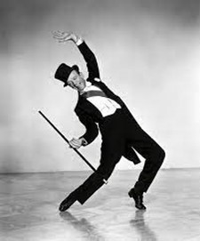
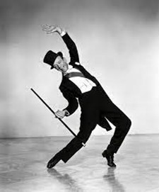

Fred Astaire
 

Fred Astaire was born on 10th May in 1899 in Berlin and died on 22nd June in 1987 in Los Angeles. His mother Johanna Ann Austerlitz was a daughter of Protestant German immigrants from East Prussia. His father was an immigrant from Austria-Hungary with Jewish roots.
In his childhood, together with his sister Adele, he danced and had appearances on cabaret and concert hall stages. In 1917, Fred Astaire danced on Broadway in “Over the Top”. In 1931, he has an audition in Hollywood. He was criticized: “Can't sing, can't act, is slightly balding, but can dance a little”.
After this hard setback, Fred Astaire made a contract with RKO Pictures, which next to 20th Century Fox, Paramount and Warner was the smallest of the “Big Five” major studios. He started dancing in many films, for example in “Flying Down To Rio”. For this film, he and Ginger Rogers danced a supporting role. It marked his breakthrough in his career.
After the big cinema success of that film, Astaire and Rogers made nine other films together in which Astaires and Rogers characters fall in love and perform dance and singing parts together.
In the 1930's, Astaire and Rogers made it into the top ten box office stars and are still the best-known dance duo in film history. One of their most famous films is “Top Hat” (1935) by Mark Sandrich.